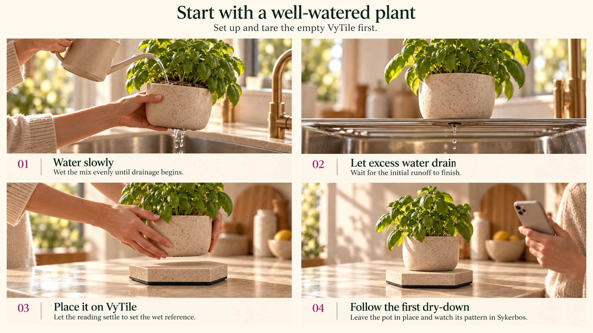

01
Water slowly
Off the tile, water evenly until drainage begins. Pause and repeat for very dry mix.
Your plants
Each plant gets its own identity, history and intelligence. Choose one plant as the main plant for your Home dashboard.
First, tare the empty VyTile. Include any empty, dry saucer you’ll keep on it. Keep the pot off the tile while taring.

01
Off the tile, water evenly until drainage begins. Pause and repeat for very dry mix.
02
Wait for the initial runoff to finish. Empty any runoff and dry the outside of the pot.
03
Centre the drained pot on the tared tile. Let its weight settle to establish the wet reference.
04
Leave the pot in its growing spot and follow its weight pattern between waterings.
Illustrated with basil and concept hardware. Use your plant’s care needs alongside its measured history.
Loading your claimed VyTiles…